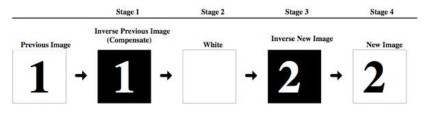
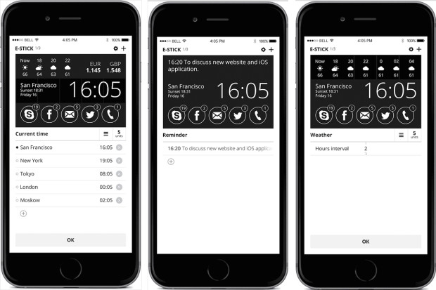
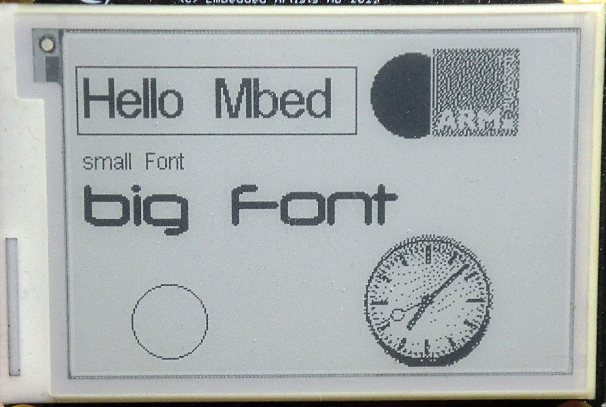
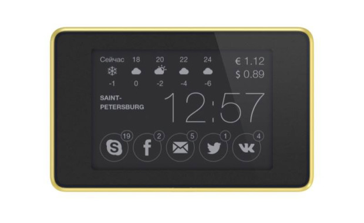

There’s an Indiegogo campaign running for Smart Stickers - low cost bluetooth connected E-ink displays. The product looks interesting, and I want this to become a real product, but I have some serious doubts about the campaign.
Tech
E-Ink Display
Smart Stickers use a 2.7” Pervasive Displays E-Ink screen. These screens are capable of displaying black and white only, and are 264x176 pixels. The screens only consume power when refreshing, and so are well suited to displaying information that refreshes infrequently when powered by a battery. The screens are not nearly as fast to update as the LCD displays on a smartphone, and to avoid ghosting, must go through a sequence of intermediate images when refreshing, drawing the inverse of the previous image and the inverse of the new image before drawing the new image. This can take some time and looks unpleasant. In the example screens shown in the video with the current time, the screen must be refreshed every minute to update the time.

source: repaper.org
This isn’t displayed in the Smart Stickers video, but there is an example on Youtube of an Embedded Artists development board refreshing a 2.7” Pervasive Displays E-Ink screen.
The Pervasive E-Ink displays are readily available for prototyping, with example code for Arduino and other platforms.
Bluetooth Low Energy
Smart Stickers use a Bluetooth Low Energy (BLE) module for connecting to a smartphone to configure the display and update information. The outline in the mechanical drawing looks like a HM-11 module. BLE is a good choice for being able to use minimal power but still be accessible for immediate updates as new information arrives. It has some drawbacks however, as it requires a smartphone to connect to the internet. You couldn’t set the display up for your family, for example, and expect it to update while you and your phone were away from home. BLE has a low data rate, roughly 10kB/s max, but this shouldn’t be a problem as a 264x176 mono image is less than 6kB, so the phone could push an entire image in less than a second.
Why not WiFi?
Smart Stickers are similar in concept to DISPLIO, a WiFi connected E-ink display that was also crowdfunded this year. There are a couple reasons why Smart Stickers may have picked BLE over WiFi. The first is power consumption. BLE can stay in a low power mode where it is listening for new messages from the smartphone but using very little power, where WiFi uses a lot more power when it is active. Smart Stickers can get updates in close to real time, while with DISPLIO, you have to choose between frequent updates or long battery life, and there is no option for always listening on battery power. A second reason might be cost: BLE chipsets are generally cheaper than WiFi, though with chips like the ESP8266, that is starting to change. A third reason might be reduced complexity: with BLE there’s no need to program WiFi credentials into the display or troubleshoot network issues, and the firmware only needs to communicate with the smartphone app, not a server in the cloud.
Software
There is no mention of a microcontroller on the Smart Stickers description except for the CC2541 BLE chipset. The CC2541 has an 8051 core with 128/256kB flash and 8kB RAM, so it seems capable of updating the panel in addition to handling BLE communication. The design will need more memory to store the image as the E-Ink display is write only, and requires an entire row to be refreshed even when updating a single pixel. I didn’t see any external memory in the published Smart Stickers CAD drawings, but they may not be up to date.
In the simplest design, most of the intelligence can stay in the smartphone app, and the display firmware can be limited to updating the display with a new image sent by the smartphone. This makes sense for a lot of content, as weather or social media notifications can’t be updated without data from the smartphone. Other content - like the current time - could update on its own without wasting battery by communicating over BLE. The display could also store fonts and icons so an image could be built up without sending bitmap data over BLE with every update.

The Smart Stickers App lets you customize your screen, dividing the screen up into 15 segments, with widgets taking up one or more segments. This seems like a smart way to allow for flexibility while still keeping the design simple.
Concerns
While I like the design of this product, it’s good to be a bit skeptical when backing projects on crowdfunding sites, as there is no guarantee that the company will be able to deliver the product.
I saw a couple red flags immediately when looking at this campaign. First, it is a “flexible funding” campaign, which means that even if Smart Stickers doesn’t reach it’s $75,000 goal, they keep all the funds anyway. This could put them in a dangerous position where they have a commitment to build product for their customers, but not enough money raised to actually do it. Too many crowdfunding campaigns have ended with the project creator losing money on the campaign and still unable to deliver products to their backers.
Second, the price is really low - especially at the early bird levels - but $30 including shipping seems too low for a product like this. The E-Ink display itself is $15 from Digi-Key in 100 piece quantities, though they may be able to get a lower price with volume or by sourcing direct from Pervasive Displays. Even so, adding up the costs of display, BLE module, battery, custom circuit board, enclosure, assembly, and worldwide shipping, then considering the up-front costs for tooling needed for an enclosure, and margin to make some profit - this seems too cheap.
Next, the schedule doesn’t seem realistic. They’re supposed to be sourcing parts in December, but won’t know the number of units to build until the campaign ends at the end of December. It seems unlikely that they will be able to do a production run in January with such a short time to source parts. Shipping isn’t until February, but February is also Chinese New Year, which puts a major delay into production and shipping schedules before and after the holiday. There are FCC and CE logos on the packaging, but no accounting for the time it takes to test, and possibly modify the design if tests fail.
Finally, there are no live shots of the prototypes updating the display. The same image is on the display in almost all the real life photos, with one exception. It would be easy to use a development board to draw a mockup image to an E-Ink panel, put the panel in an enclosure, without actually building a functioning prototype. It would be even easier to print out a photo of the screen content and put that in an enclosure. The video and photos don’t give me confidence that there is a working prototype of the product.
Many of the renderings on the campaign page don’t show the pixelation that E-Ink displays will have - especially in the circles and fonts with fine lines. With the display limited to black and white, it’s not capable of anti-aliasing and the edges of fine lines will look jagged. Here’s this example of what fonts and circles look like on the actual E-Ink display to the Smart Stickers rendering:  
Summary
I like the concept of this product and I hope to see it get to market. I see too many red flags with this campaign to recommend backing it.